×

This guide explains all configuration options available under Project Configuration settings, detailing how administrators can manage project identification, tracking permissions, and approval automation.
To configure project settings, navigate to Timesheet Customization within the administration menu and click Configure adjacent to Project Configuration. This action launches the Project Configuration panel where all settings can be customized.
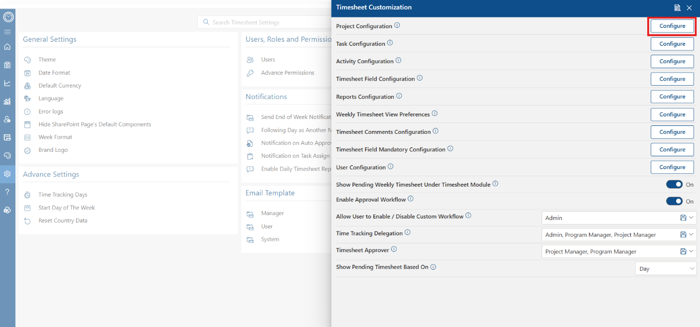
The Enable Project ID toggle controls the visibility of a unique identifier for each project across the system. These IDs assist in linking projects seamlessly across modules and analytical reports. Toggling this off hides Project IDs if they are not required by your organization.
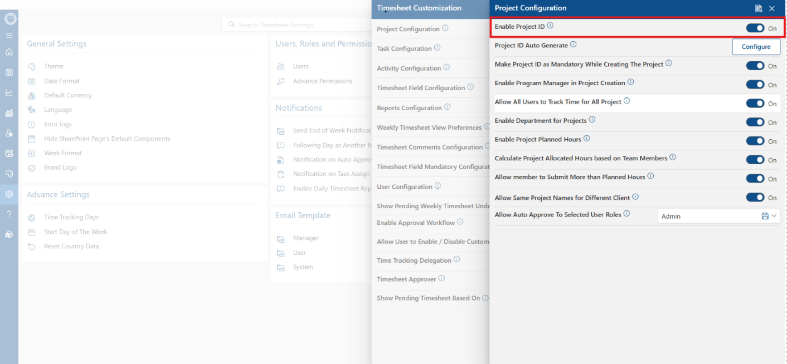
Selecting Configure next to Project ID Auto Generate opens the automated identification setup. This allows administrators to establish standardized prefixes and sequential numbers for every new project. Automating this step guarantees uniform project coding without requiring manual user input.
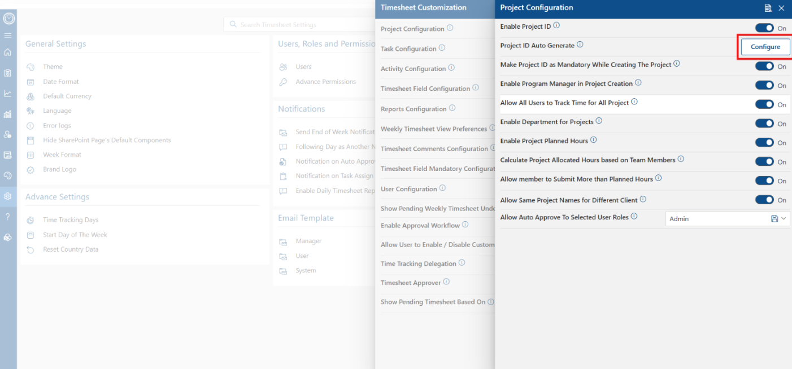
In the Project ID configuration modal, enable auto generation and define the target prefix and starting number sequence. Save the changes to enforce this pattern globally across all future project records created in the system.
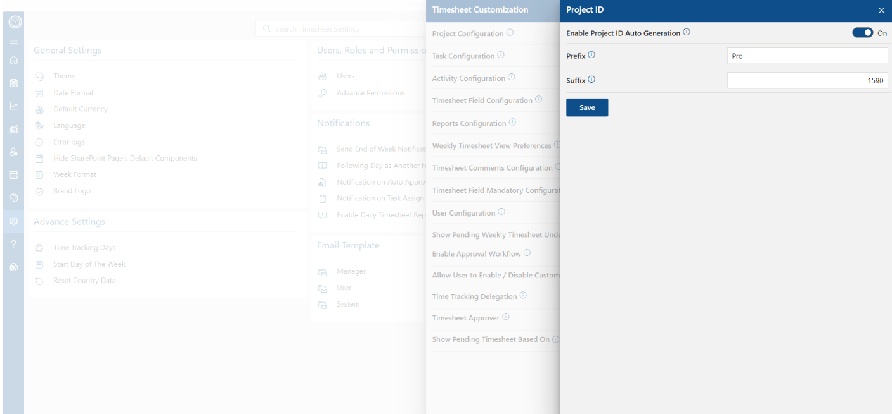
Enabling Make Project ID as Mandatory While Creating The Project enforces the requirement of a valid Project ID before saving any new project. This setting improves data integrity and prevents unindexed project records from entering the database.
The Enable Program Manager in Project Creation option displays a dedicated Program Manager selection field on the project setup form. This establishes clear leadership oversight and streamlines governance for complex, multi-tiered initiatives.
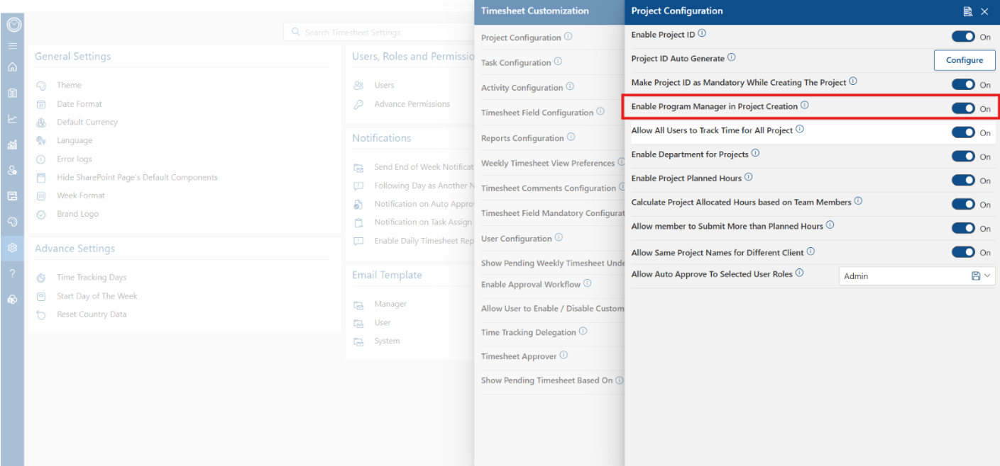
Activating Allow All Users to Track Time for All Project removes user-specific project assignment restrictions. Any employee can log working hours against any active project, making it ideal for shared tasks or cross-functional team collaborations.
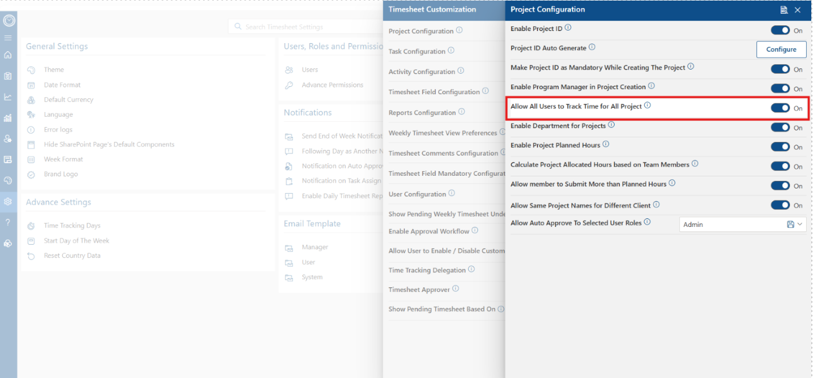
The Enable Department for Projects setting adds a Department field to project records. Associating projects with specific departments enhances corporate organization, simplifies filtering, and improves departmental financial reporting.
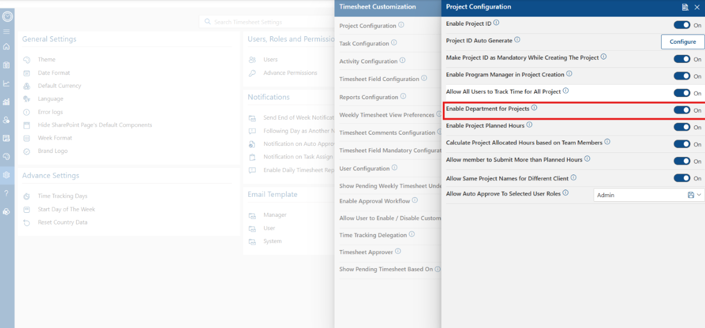
The Allow Same Project Names for Different Client toggle allows identical project titles to exist simultaneously as long as they are assigned to different clients. This accommodates standardized service offerings provided across multiple external accounts.
Enabling Enable Project Planned Hours allows project managers to establish target estimated hours for each project. These planned figures provide a baseline against which actual logged hours can be compared during progress tracking.
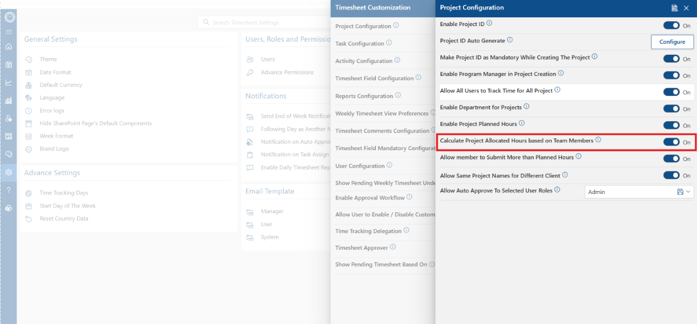
The Calculate Project Allocated Hours based on Team Members option automatically sums individual team members' allocated hours to calculate total project estimates. This eliminates manual calculation steps and improves capacity planning accuracy.
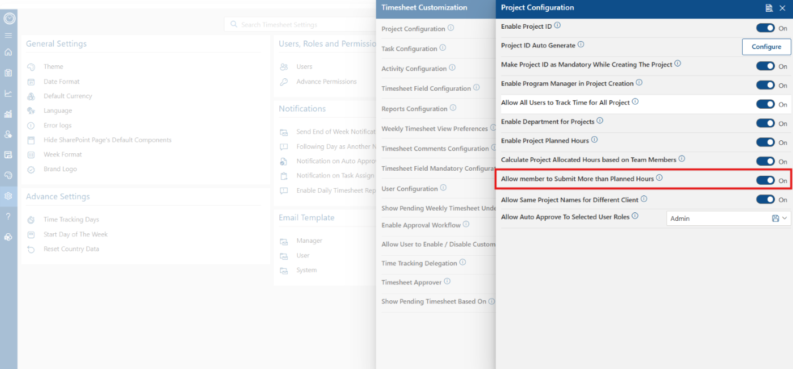
Toggling Allow Member to Submit More Than Planned Hours enables users to log time beyond initial baseline limits when scope adjustments occur. Disabling this rule strictly caps user timesheets at pre-approved estimates.
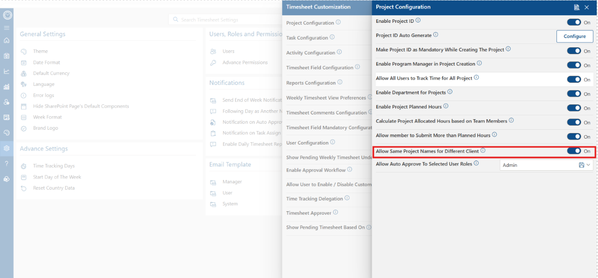
The Allow Auto Approve To Selected User Roles dropdown enables administrators to designate specific organizational roles (e.g., Administrators or Project Managers) whose submitted timesheets bypass manual review cycles, accelerating approval workflows.
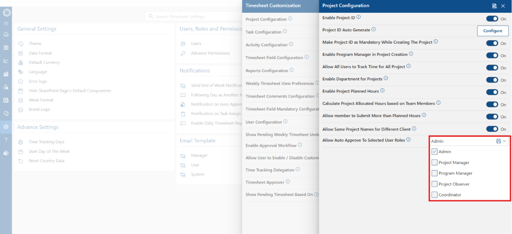
This document details each available option under the Timesheet Field Configuration settings, outlining how administrators can tailor field visibility and default behaviors during time entry.
To access these settings, navigate to Timesheet Customization from the main settings menu and click on Configure next to Timesheet Field Configuration. This action launches the Timesheet Fields configuration panel.
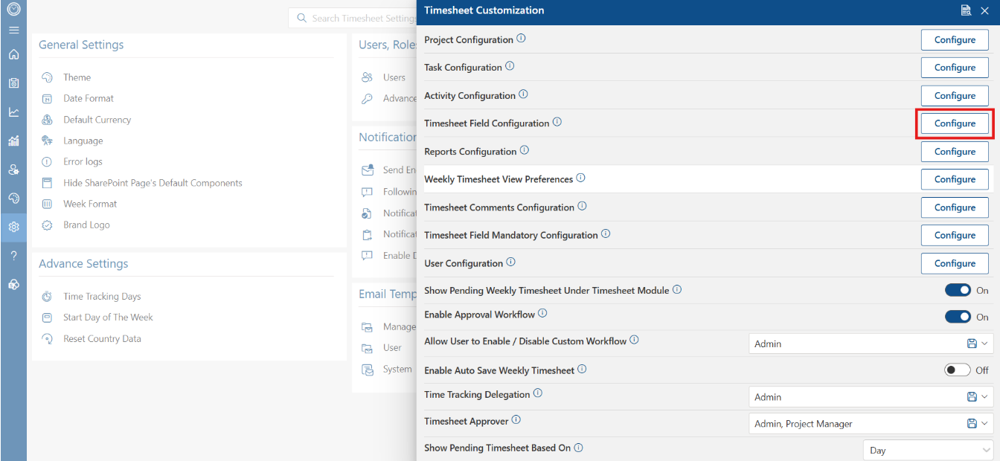
The Billable setting controls whether employees can designate individual time entries as billable or non-billable. When switched on, a billable field becomes visible on time entry forms, helping organizations distinguish between client-billable hours and non-billable internal work.
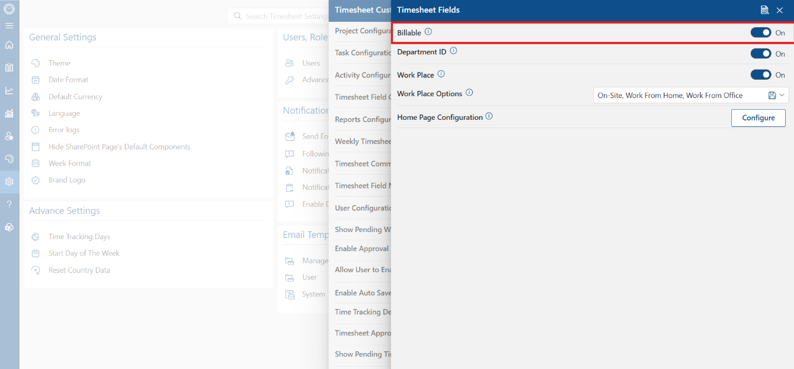
Enabling the Department ID setting renders the department selection field inside timesheets. This allows employees to tag their logged hours to specific departments, improving reporting accuracy and enabling streamlined cost allocation.
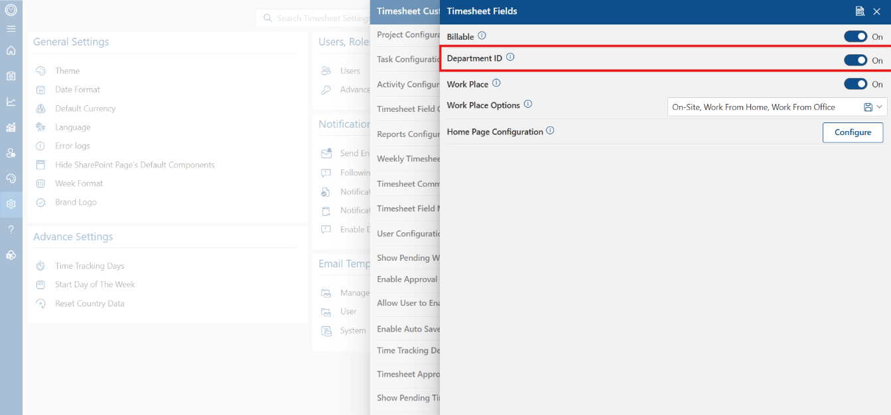
The Work Place field lets users record where their daily tasks were completed. Administrators can define selectable location presets—such as On-Site, Work From Home, or Work From Office—to fit organizational tracking preferences.
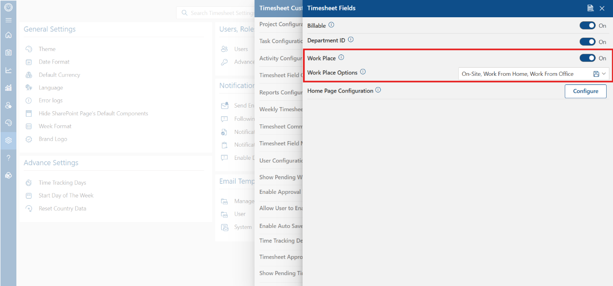
Clicking Configure next to Home Page Configuration opens the Home Pivot Configuration panel, where administrators can select which widgets and controls appear on the user's primary landing view.
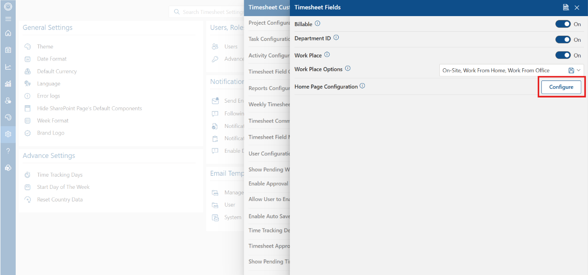
When the Show Status toggle is activated, overall timesheet status indicators are added to the home screen. This provides employees with real-time insight into the progress and approval state of their submitted timesheets.
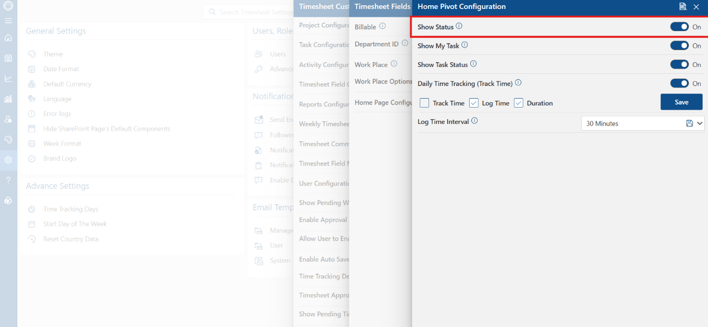
Enabling Show My Task places assigned active tasks directly onto the main timesheet homepage. Users can quickly view and access their current workload without navigating through additional menus.
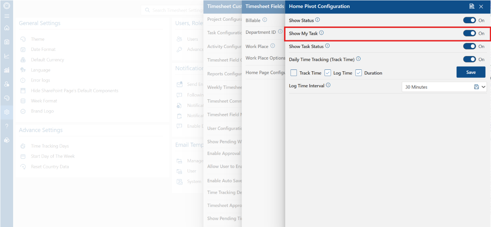
The Show Task Status setting adds status indicators (e.g., Open, In Progress, or Completed) next to individual tasks on the homepage. This gives users and managers quick visibility into task completion rates.
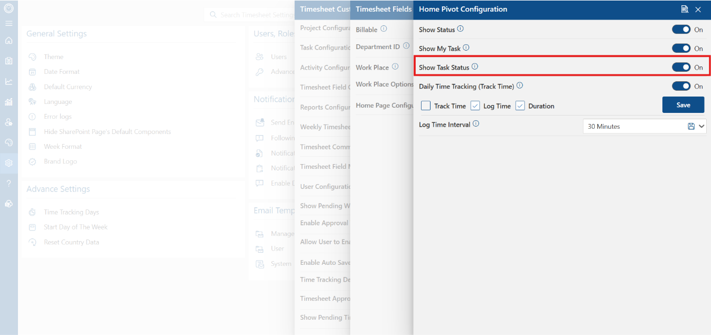
This section enables administrators to configure daily tracking modes, such as Track Time, Log Time, and Duration options based on organizational workflow needs.
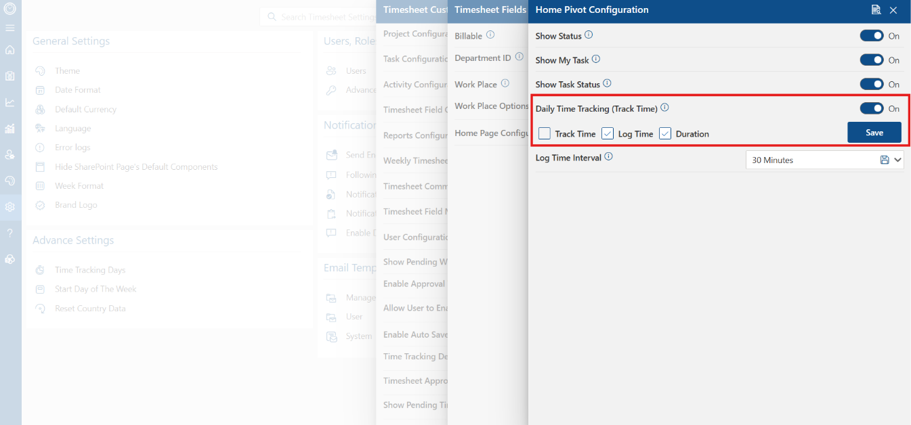
The Log Time Interval setting defines the minimum time increments (such as 15 Minutes or 30 Minutes) available when users record their hours, ensuring standard and consistent time logging.
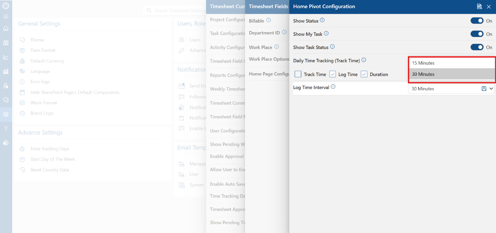
Each section below outlines an available option under Task Configuration, featuring its corresponding screenshot and a detailed explanation of its function and benefit[cite: 8].
To open these settings, navigate to Timesheet Customization within the application settings menu and select Configure adjacent to Task Configuration. This opens the Task Configuration side panel, which serves as the central control area for managing all task-related parameters and validation rules.
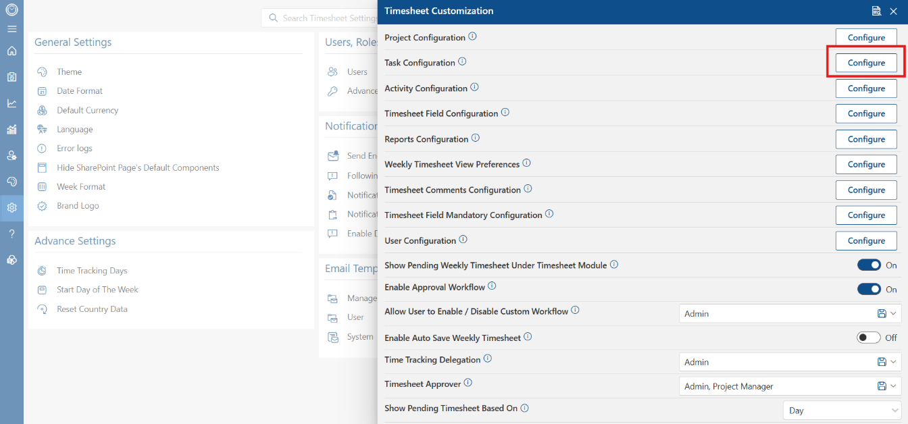
The Enable Task setting acts as the global switch for task management throughout the system. Toggling this setting off restricts users from creating or selecting tasks across all timesheets. It provides administrators full control over overall task feature availability based on operational needs.
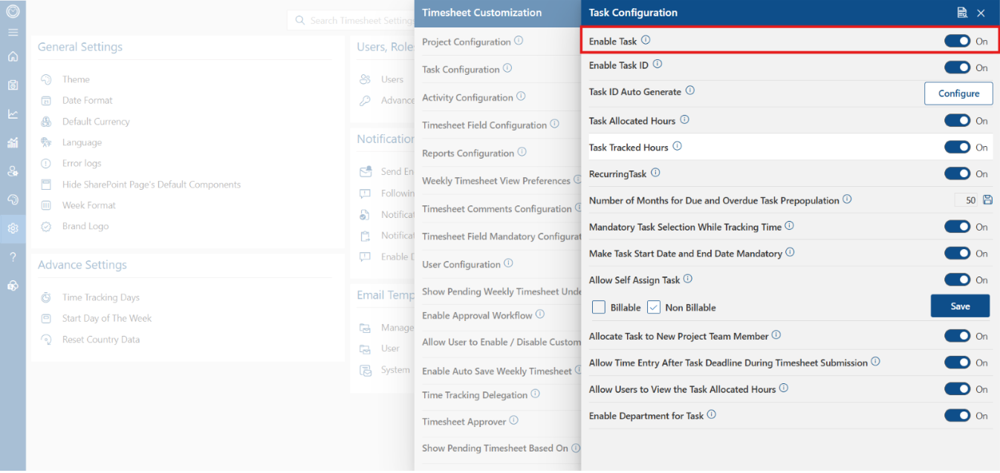
Activating Enable Task ID assigns a unique identification code to every individual task created in the platform. Distinct Task IDs greatly enhance cross-departmental searching, audit trails, and reporting capabilities. This setup is highly recommended for structured project management workflows.
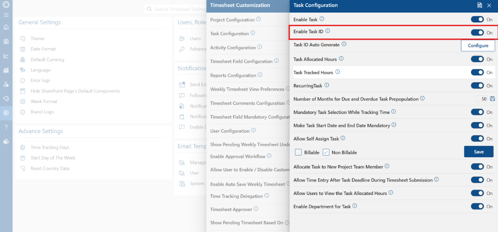
Clicking Configure next to Task ID Auto Generate allows administrators to set up standardized naming conventions. This configuration modal lets you define custom prefix and suffix rules to automatically assign sequential Task IDs upon creation. Utilizing auto-generation removes manual entry errors and ensures naming consistency across projects.
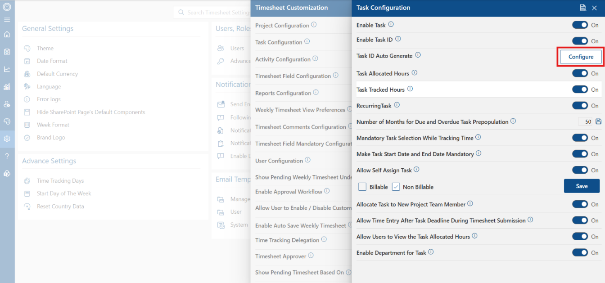
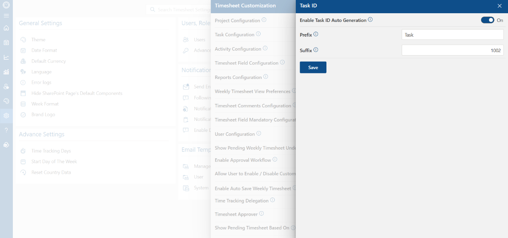
The Task Allocated Hours feature displays estimated or budgeted hours directly on each task record. This enables project managers to compare planned time against actual progress in real time. It serves as a key tool for resource scheduling, capacity planning, and workload distribution.
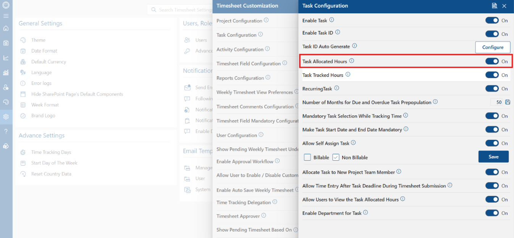
Enabling Task Tracked Hours tracks and displays the cumulative time logged by team members against a task. It delivers immediate visibility into task progress and overall team productivity. These tracked values populate directly into analytics dashboards and progress reports.
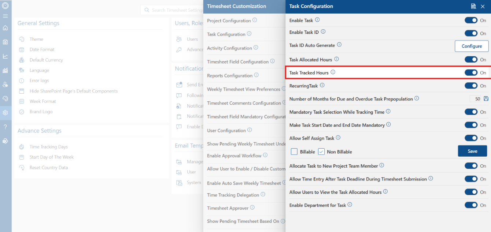
The Recurring Task setting automatically pre-populates routine or repeating tasks for upcoming billing cycles. Administrators can specify the exact number of months for prepopulating due and overdue items. This automation significantly lowers manual administrative overhead for routine project tasks.
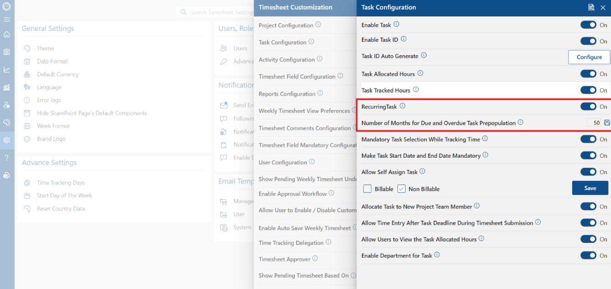
When Mandatory Task Selection While Tracking Time is enabled, users must associate their logged hours with a valid task. The system prevents users from saving or submitting blank task entries on their timesheet. This rule ensures complete data collection and accurate task-level cost accounting.
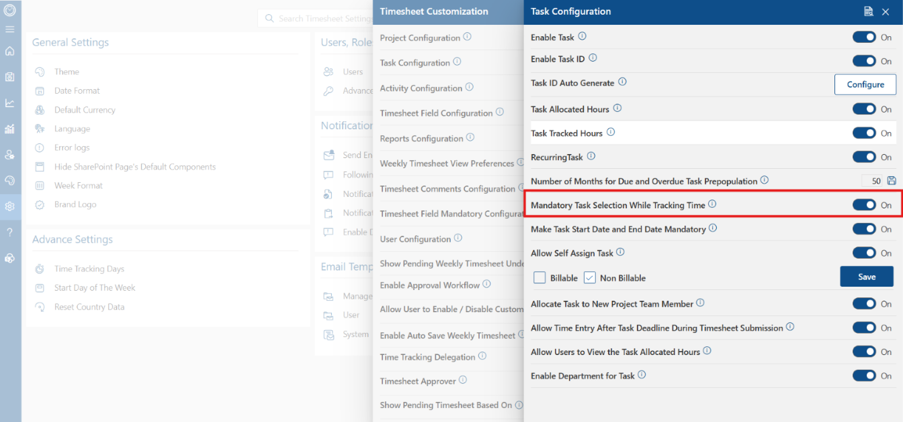
Activating Make Task Start Date and End Date Mandatory enforces explicit scheduling windows during task creation. Requiring start and finish dates improves timeline accuracy across project roadmaps. It also enables reliable system calculations for identifying overdue or delayed tasks.
The Allow Self Assign Task setting permits team members to self-allocate unassigned tasks directly from the project pool. Administrators can configure whether self-assigned tasks default to Billable or Non Billable status. This option increases team agility while reducing the need for manual manager assignments.
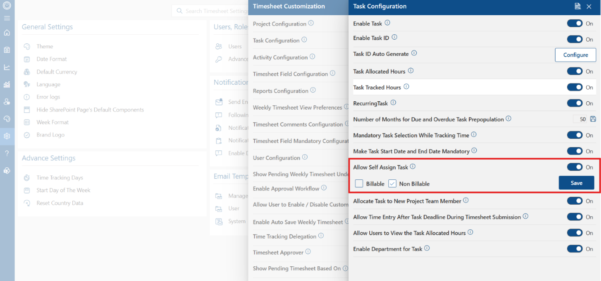
Enabling Allocate Task to New Project Team Member automatically assigns default project tasks to users newly added to a team. New members gain immediate visibility into their baseline responsibilities without manual onboarding steps. It simplifies team scaling and streamlines project setup.
The Allow Time Entry After Task Deadline control permits users to log hours against tasks even after their designated due dates have passed. This guarantees that all work performed on overdue tasks is still captured for accurate payroll and client billing. If strict timeline enforcement is required, disabling this option blocks late submissions.
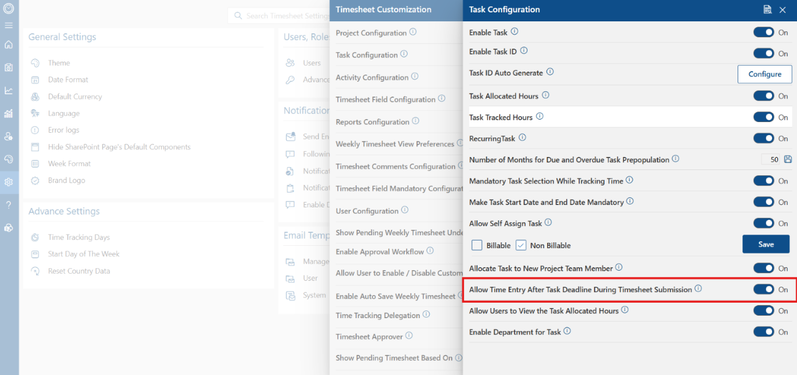
Toggling Allow Users to View the Task Allocated Hours grants team members visibility into their assigned time budgets. Employees can monitor their remaining effort against initial estimates directly from their time-logging interface. This transparency helps employees manage their time effectively to prevent budget overruns.
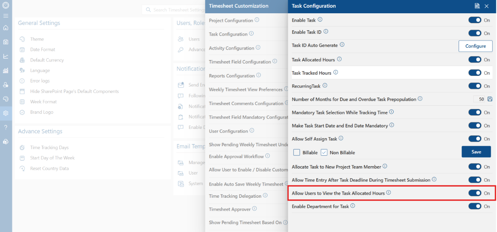
The Enable Department for Task setting links individual tasks with organizational departments. Associating tasks with departments enables advanced filtering and cross-departmental cost distribution analysis. This functionality is particularly useful for enterprise organizations managing complex, multi-departmental operations.
This document details each available option under the Activity Configuration settings, explaining how administrators can manage activity visibility, enforcement, and self-assignment during time tracking.
To access these settings, navigate to Timesheet Customization from the main settings menu and click on Configure next to Activity Configuration. This action opens the side panel where all activity visibility and validation rules are managed.
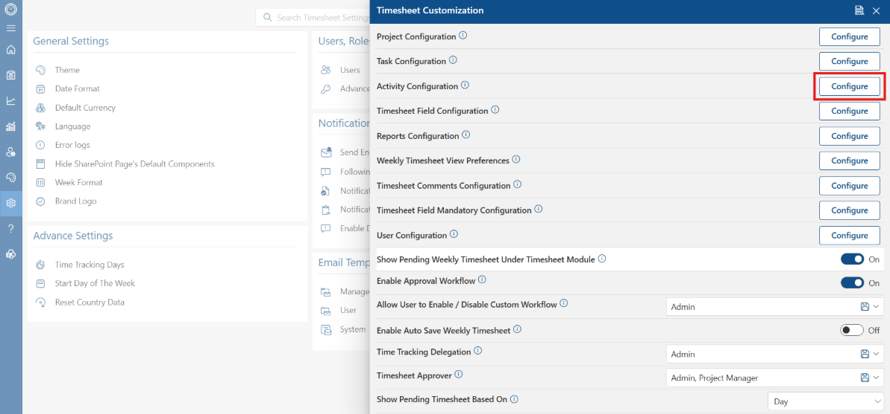
The Display Activity toggle determines whether the activity field is accessible across the application. When enabled, users can categorize their logged hours by selecting specific activities. Disabling this setting removes activity selection entirely, streamlining the interface for simpler workflows.
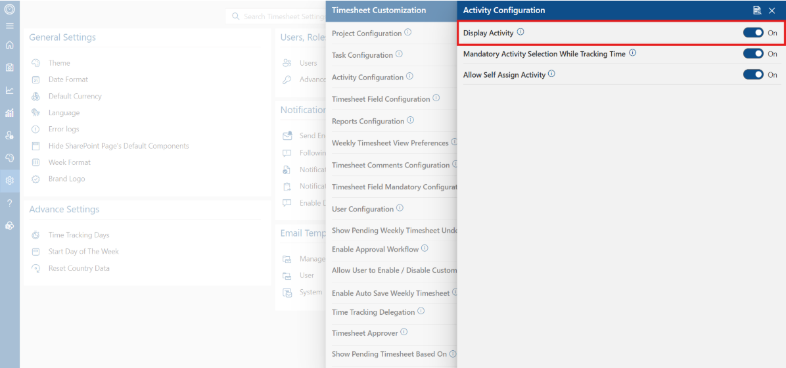
When the Mandatory Activity Selection While Tracking Time option is enabled, users are required to pick an activity before submitting or saving a timesheet entry. This setting ensures data completeness and improves the quality of activity-based reporting.
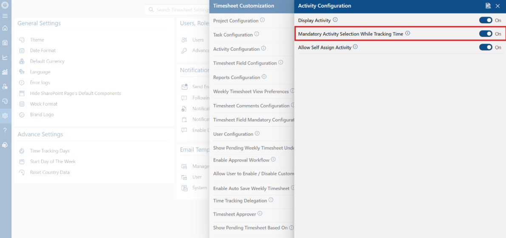
The Allow Self Assign Activity toggle empowers employees to assign open activities to themselves without needing admin approval. This option offers team members added operational flexibility while reducing repetitive administrative requests.
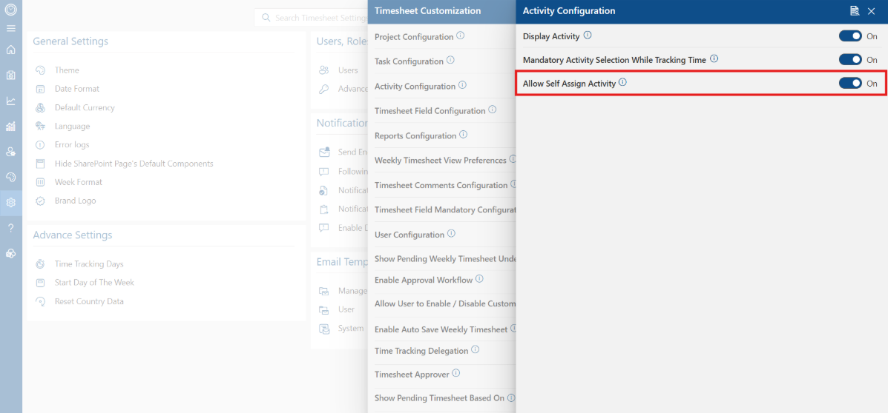
This Knowledge Base explains the User Configuration options available under Timesheet Customization. Each section below contains the correctly matched screenshot and a detailed explanation of the corresponding feature.
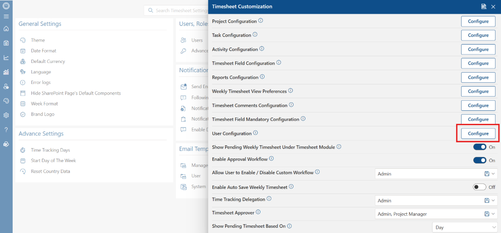
Navigate to Timesheet Customization and click the Configure button beside User Configuration. This opens the User Configuration panel where administrators can enable or disable user-specific fields available in the timesheet. These settings help organizations expose only the required information to end users based on business requirements.
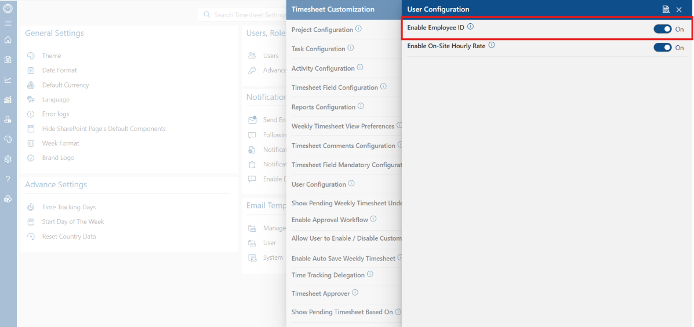
When this option is enabled, the Employee ID field becomes available throughout the timesheet process wherever applicable. It allows organizations to associate timesheet records with unique employee identifiers for better tracking and reporting. If disabled, the Employee ID field is hidden from users and is not available during timesheet operations.
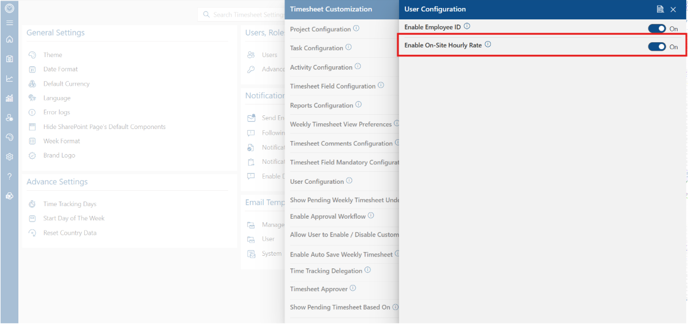
When enabled, users can work with the On-Site Hourly Rate field wherever the application supports it. This feature is useful for organizations that bill customers based on employee on-site hourly rates or maintain project costing information. When disabled, the hourly rate field is hidden, simplifying the interface for organizations that do not require rate management.
This knowledge base explains every setting available under Reports Configuration. Each section contains the correctly matched screenshot and a detailed explanation of the feature.
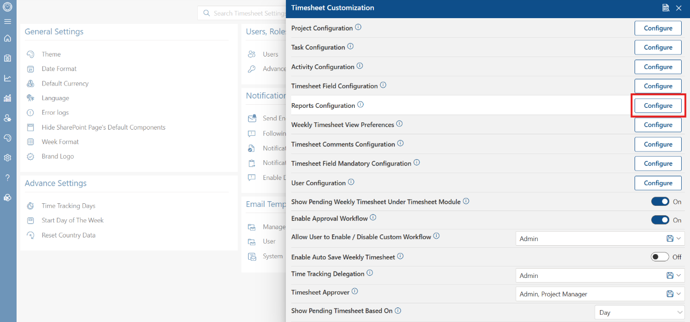
Navigate to Timesheet Customization and click Configure beside Reports Configuration. This page contains all report-related settings used to control report visibility, export behavior, and financial information. Administrators can customize report access according to organizational requirements.
Enables client-based reports throughout the application. Users can generate reports grouped by client and review client-specific timesheet data. Disable this option if client reports should not be available.
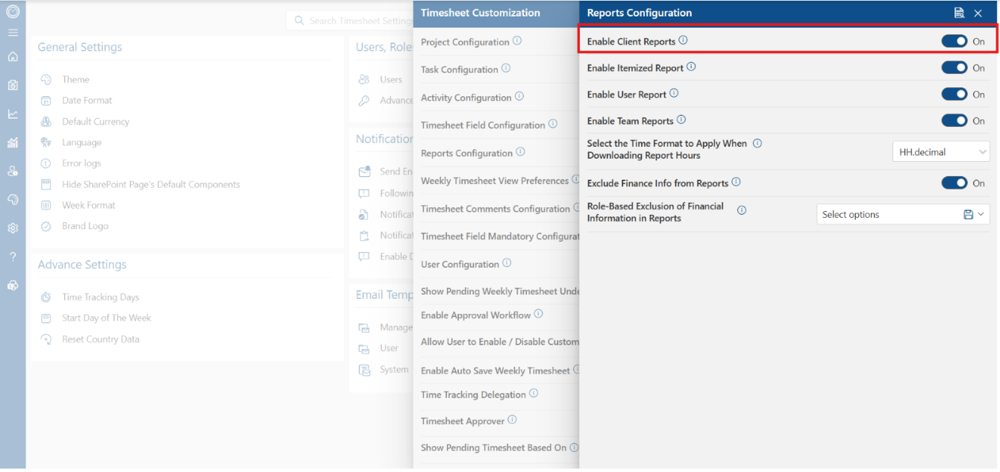
Allows users to download detailed reports containing individual time entries. Each record is displayed separately for easier analysis and auditing. This is useful for billing verification and activity tracking.
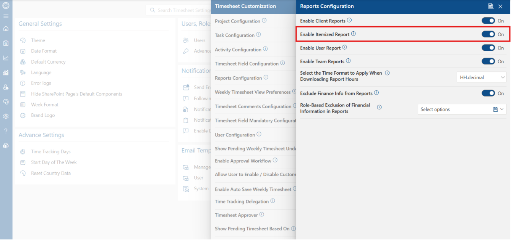
Displays reports for individual users. Managers can review logged hours, submitted work, and user productivity. This improves employee performance monitoring.
Enables report generation at the team level. Managers can compare workload and utilization across different teams. This supports planning and reporting activities.
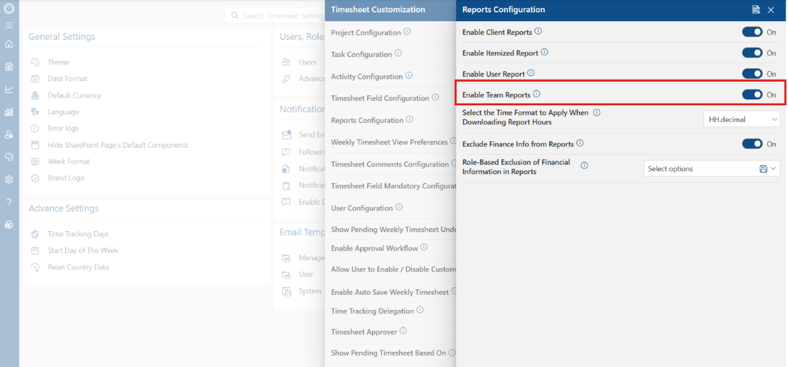
Defines the format used when report hours are exported. Available options include HH:MM and HH.decimal. The selected format is applied consistently to downloaded reports.
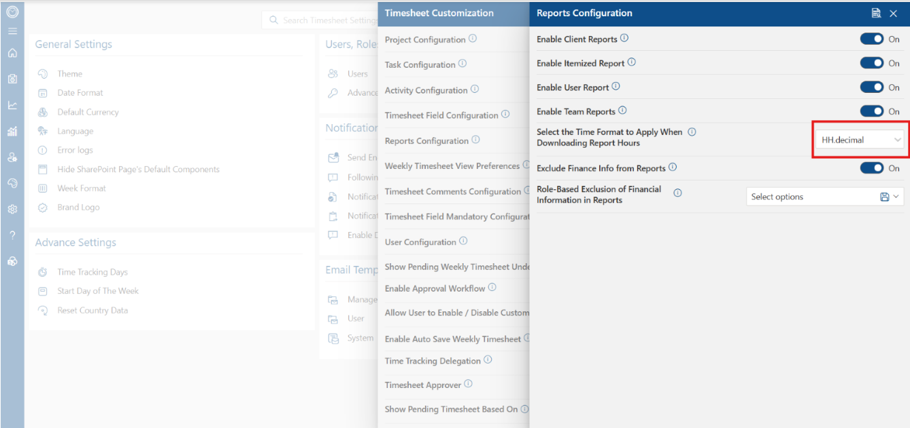
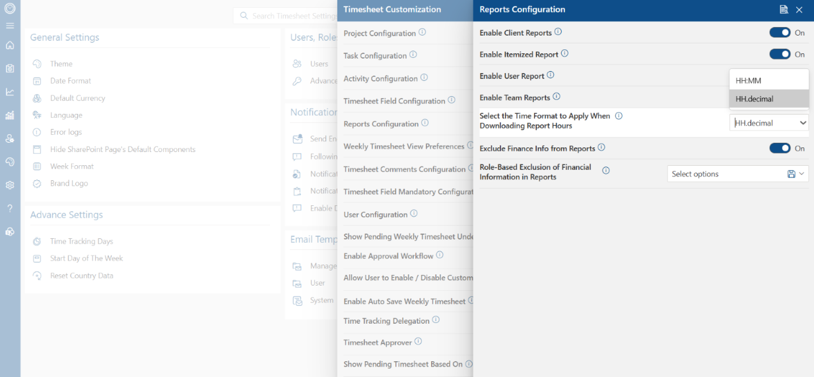
Removes financial information from generated reports when enabled. This helps prevent confidential billing or cost information from being shared. It improves report security.
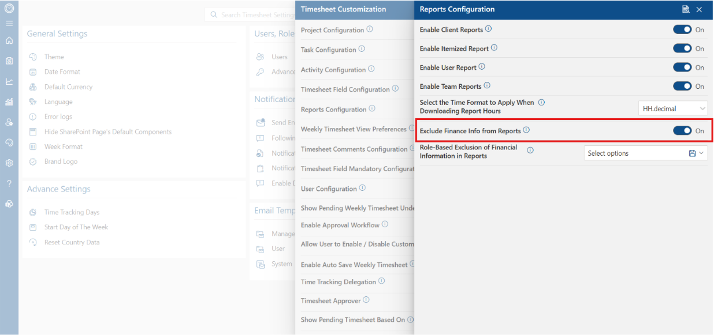
Allows administrators to specify which roles should be restricted from viewing financial information in reports. Multiple roles can be selected based on business needs, providing granular access control. The role picker displays available roles including Coordinator, Program Manager, Project Manager, Project Observer, and Users. Select one or more roles to apply financial information restrictions and save the configuration.
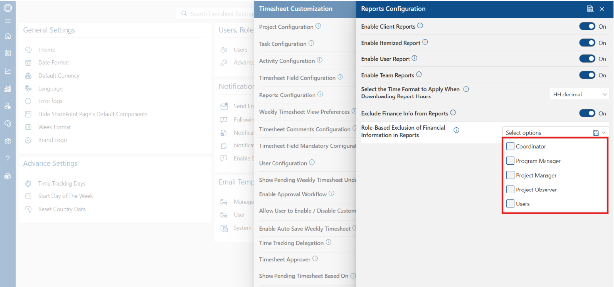
This knowledge base explains every setting available under Weekly Timesheet View Preferences. Each section contains the correctly matched screenshot and a detailed explanation of the feature.
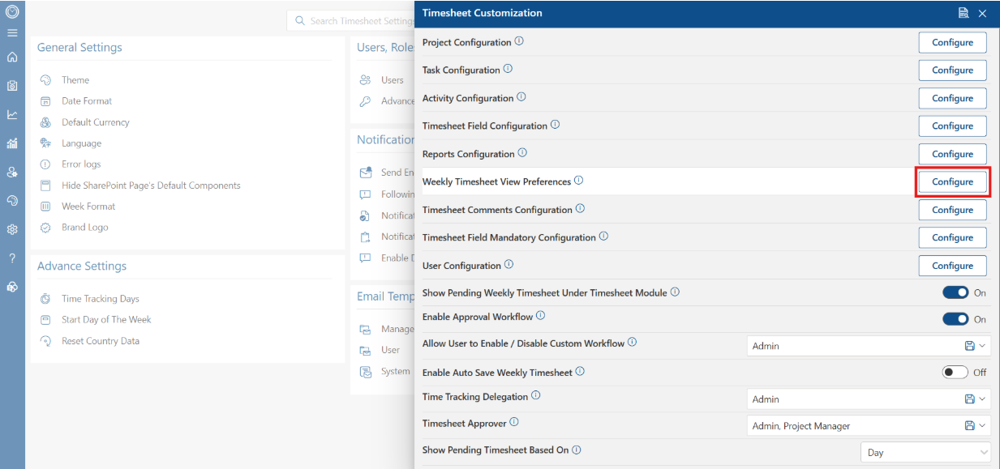
Navigate to Timesheet Customization and click Configure beside Weekly Timesheet View Preferences. This page contains settings that control the appearance and behavior of the weekly timesheet page. Administrators can enable or disable features based on organizational requirements.
Enables the Copy Previous Week option on the weekly timesheet page. Users can quickly copy timesheet entries from the previous week instead of entering the same data again. This reduces manual effort and improves productivity.
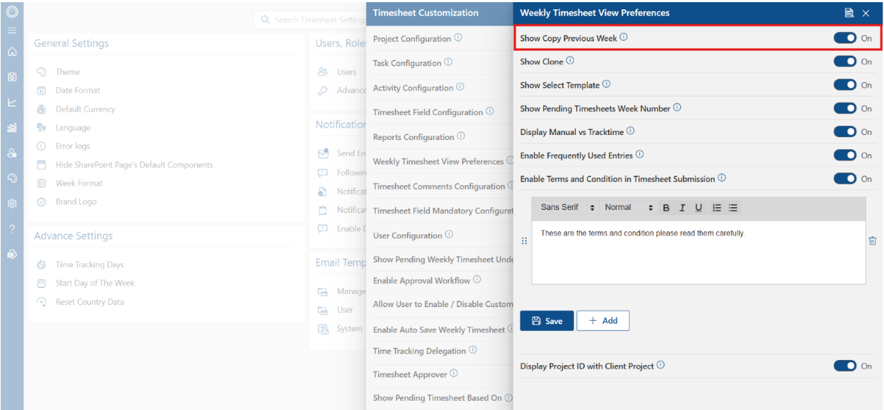
Displays the Clone option for weekly timesheets. Users can duplicate an existing timesheet to create another with similar entries. This is useful when work patterns are repeated across weeks.
Displays the Select Template option in the weekly timesheet. Users can choose predefined templates for faster timesheet entry. This helps maintain consistency and saves time.
Displays the week number for pending timesheets. Users can easily identify which reporting week requires action. This improves visibility and reduces confusion during submissions.
Shows a comparison between manually entered time and tracked time. Users and managers can verify recorded hours against tracked hours. This improves reporting accuracy and compliance.
Displays frequently used projects, tasks, or activities for quick selection. Users can add recurring entries with fewer clicks. This speeds up weekly timesheet completion.
Enables a Terms and Conditions section during timesheet submission. Administrators can enter formatted text that users must review before submitting their timesheets. The editor supports formatting and allows the content to be saved for future submissions.
Displays the internal Project ID together with the Client Project name. Users can easily distinguish projects with similar names by viewing the associated ID. This improves project identification and reporting accuracy.
This document explains every option available under Timesheet Comments Configuration. Each section contains the correctly matched screenshot and a detailed explanation of the feature.
Navigate to Timesheet Customization and click the Configure button beside Timesheet Comments Configuration. This page allows administrators to control how comments behave during weekly timesheet submission. These settings help organizations enforce comment visibility, editing permissions, and mandatory comment policies.
When enabled, the comments section is hidden from the Weekly Timesheet page. Users will not be able to view or add comments while filling or reviewing their weekly timesheet. This option is useful for organizations that do not require comments as part of their timesheet process.
When enabled, users can modify the comments even after a timesheet has been submitted. This allows employees to update or clarify information without recreating the entire timesheet. It provides flexibility while maintaining accurate communication between users and approvers.
When enabled, users must enter a comment before submitting their weekly timesheet. The system prevents submission until a valid comment is provided. This helps organizations capture submission notes, work summaries, or other mandatory business information.
This document explains the Timesheet Field Mandatory Configuration settings. The screenshots are matched with the correct screen and describe how administrators configure mandatory timesheet fields for each client.
Navigate to Timesheet Customization and click the Configure button beside Timesheet Field Mandatory Configuration. This opens the configuration page where administrators can control which timesheet fields are active and mandatory for each client. These settings provide flexibility by allowing different clients to have different mandatory field requirements.
The configuration grid displays all available clients along with configurable timesheet fields such as Task, Activity, Work Location, Employee Type, Country, Learning Activity, and Task Outcome. The Active checkbox must be enabled before any field can be marked as mandatory, ensuring only active fields are enforced during timesheet entry. After configuring the required fields for each client, click Save to apply the changes or Cancel to discard the modifications.